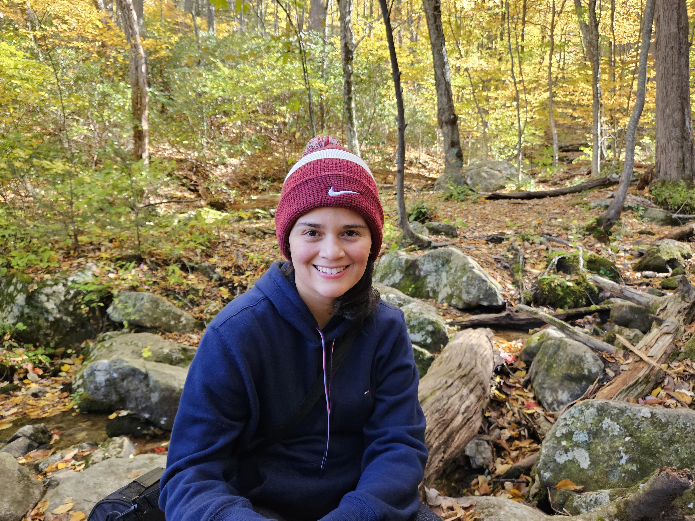

Emily Juliao | WDD130
Hello! My name is Emily Juliao, I am from Miami, FL but I am currently living in Virginia. I miss the warm weather but I have enjoyed the beautiful seasons Virginia has to offer. I enjoy being outdoors, playing sports, drawing, and eating good food. I am excited to learn more about web development and software programming. I attended BYU Idaho and received my bachelors in Psychology but I have decided to continue my education and learn a new skill along the way. I currently work full time at a golf club as the office and marketing manager. I enjoy creating things and seeing them come to life!